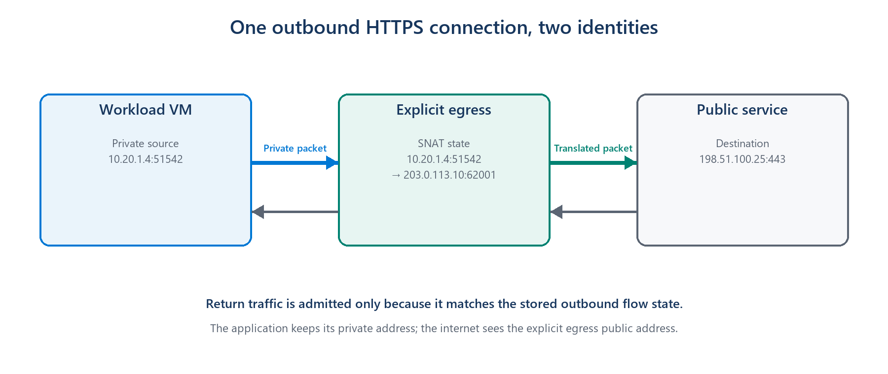
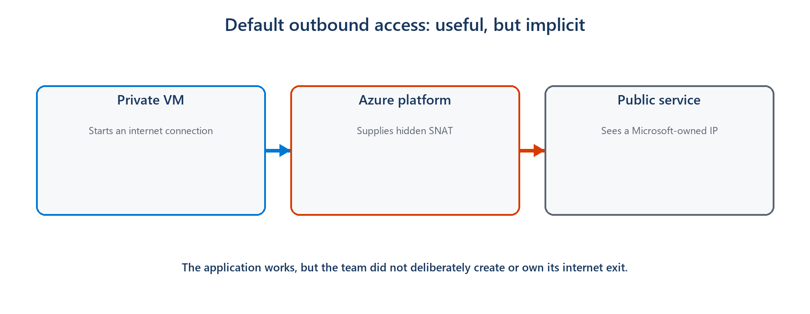
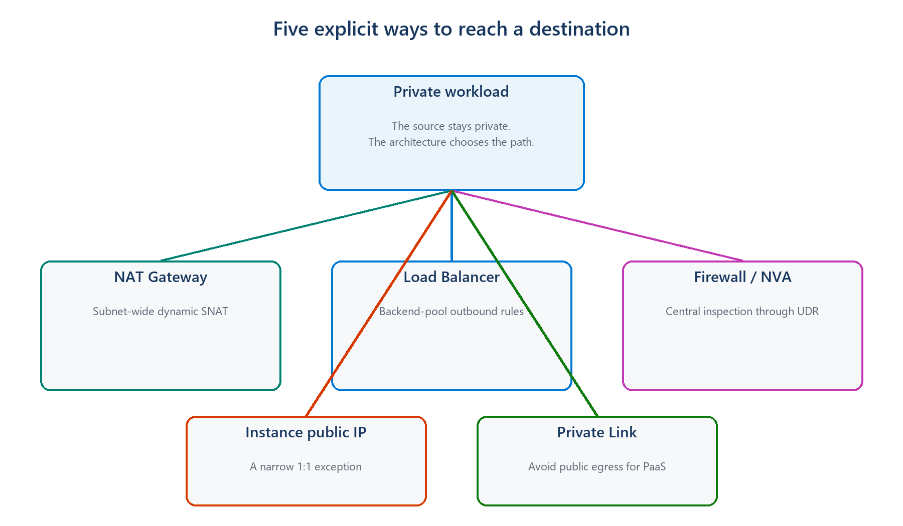
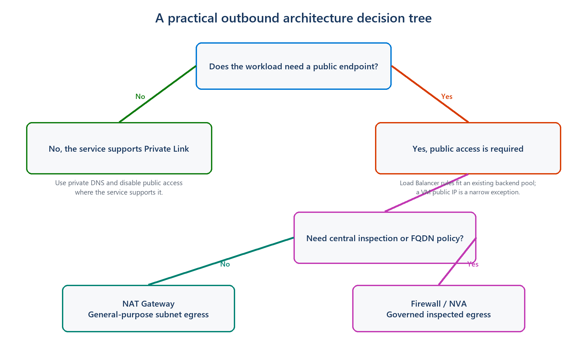

An introductory security guide to replacing invisible internet access with an explicit, controlled path
| THE SHORT VERSION Private subnet does not mean no internet. It means no implicit internet path. If a workload needs a public endpoint, create and validate an explicit egress path before setting defaultOutboundAccess to false. |
|---|
What outbound connectivity actually means
Imagine a private virtual machine that needs to download an operating-system update or call a payment API. The VM starts the conversation, so the traffic is outbound. Its source address might be 10.20.1.4, an address that works inside the virtual network but cannot be used on the public internet. Before the packet leaves Azure, that private source must be represented by a public address.

Figure 1. An outbound service gives a private workload a public identity for the connection and remembers where the reply belongs.
This translation is called Source Network Address Translation, or SNAT. The outbound service temporarily maps the VM's private address and port to a public address and port. When the reply returns, the saved mapping sends it back to the correct VM. This does not mean the internet can freely start connections to the VM; the return packet is accepted because the VM started the conversation.
| SIMPLE MENTAL MODEL Outbound connectivity is the controlled exit door for a private workload. Security depends on knowing where that door is, who owns it, and what traffic is allowed through it. |
|---|
The old convenience: internet access without an explicit door
For many years, Azure made this feel automatic. If a VM had no public IP, NAT Gateway, Load Balancer outbound rule, or firewall path, Azure could still give it default outbound access through a Microsoft-owned public IP. The VM reached the internet even though the team had not created an outbound resource.

Figure 2. Default outbound access hid the public egress path behind platform behavior.
The problem is not that every VM suddenly becomes an inbound web server. The security problem is that public reachability exists by default. A compromised process can call an unknown internet destination through the same invisible path, and operators may not have a stable public IP, a central inspection point, or even a clear diagram showing how the traffic leaves.
| Implicit default | Explicit outbound |
|---|---|
| Internet access appears automatically | Internet access is an intentional design decision |
| Public identity is Microsoft-owned and can change | The team owns or selects the public identity |
| The path is easy to overlook | The path can be reviewed, logged, and governed |
| A fallback can survive unnoticed | Removing the outbound resource removes the path |
| PRIVATE DOES NOT MEAN ISOLATED Setting defaultOutboundAccess to false removes Azure's implicit fallback. A private subnet can still reach approved public destinations through an explicit NAT Gateway or firewall. |
|---|
Why disabling the default improves security
Zero Trust starts with an uncomplicated question: why should this workload be allowed to communicate? Default outbound access answers that question with 'because nothing explicitly stopped it.' Explicit outbound connectivity changes the answer to 'because we created a known path for a known need.'
• Intent becomes visible. A network diagram and deployment template show that internet access is required.
• The public identity becomes predictable. Partners can allow-list an address owned by the workload team.
• Monitoring has a natural place. NAT or firewall logs can show which destinations workloads contact.
• Policy can be stronger. A firewall can restrict destinations instead of giving every allowed packet the same unrestricted exit.
• Removing access becomes deliberate. A subnet without an explicit outbound method does not silently retain an internet fallback.
As of March 31, 2026, new Azure virtual networks use private subnets by default under the new API behavior. Existing virtual networks are not automatically changed, which is why older environments still need to identify and replace their implicit dependency.
The main choices, without the product manual

Figure 3. Different outbound methods solve different security and ownership problems.
| Choice | Think of it as | Good introductory use case | Security tradeoff |
|---|---|---|---|
| NAT Gateway | A shared exit for a subnet | Private application servers need predictable internet access | Stable identity, but it does not decide which websites are allowed |
| Azure Firewall | A guarded and inspected exit | A regulated service must restrict and log destinations | More control, with more cost and operational complexity |
| VM public IP | A personal street address | A small, justified standalone system needs its own identity | Simple, but increases per-VM public exposure and governance |
| Load Balancer rules | An exit shared by one backend pool | An existing load-balanced application reuses its frontend IP | Explicit, but less flexible for uneven or rapidly scaling workloads |
| Private Link | No public exit for that service | A VM reaches Storage, SQL, or Key Vault privately | Strongest public-path reduction, but only for supported services |
For a typical private application subnet that simply needs a stable way to call public services, NAT Gateway is usually the easiest explicit choice. If the organization must control destinations or inspect traffic, Azure Firewall is the more appropriate boundary. For supported Azure services, Private Link can remove the public journey entirely.
Two examples that make the difference concrete
Example 1: an application server downloading updates
A team runs ten private VMs. They need operating-system updates and must call one external API. With default outbound access, the calls work through a hidden public identity. The team instead attaches a NAT Gateway to the subnet and uses its known public IP. The VMs remain private, the external API can allow-list one stable address, and the internet path now exists because the team deliberately created it.
Security lesson: NAT Gateway makes the exit explicit and predictable, but an NSG or NAT Gateway alone does not provide website-level filtering. If the VMs must reach only approved destinations, place the policy at a firewall or another suitable control point.
Example 2: a compromised VM trying to send data out
Suppose an attacker gains control of an application process and tries to send data to an unfamiliar internet domain. Default outbound access may provide a route even though nobody designed one. A NAT Gateway makes the source identity visible, but it still permits general outbound connections unless other controls restrict them. A centrally governed firewall can allow required destinations, deny the unfamiliar domain, and record the attempt for investigation.
Security lesson: Disabling default access removes an accidental path. It does not automatically create least privilege. The explicit replacement must still match the security requirement.

Figure 4. First avoid public access where possible; then decide whether remaining internet traffic needs inspection.
A safe way to think about the change
Before disabling the default, ask what the workload genuinely needs to reach. Move supported Azure services to Private Link where that makes sense. Give the remaining public traffic an explicit path, test it, and only then set defaultOutboundAccess to false. Existing VMs may need to be stopped and deallocated before their old default outbound identity is fully removed.
| REMEMBER THE ORDER Understand the need → create the explicit path → test it → disable the default. Disabling first can break updates, package downloads, monitoring agents, and external APIs. |
|---|
The idea to take away
The goal is not to make every private workload unable to use the internet. The goal is to stop internet access from appearing as an invisible default. Once the exit is explicit, teams can choose a stable identity, add the right inspection and logging, and explain why the connection is allowed. That is the security improvement: replacing convenience by accident with access by design.
Further reading
These Microsoft Learn pages cover the implementation details when you are ready to apply the design: